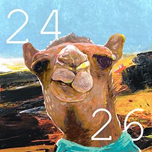

24:26
Beenzino
Simmiy twice
Always Awake
란 무엇인가?

서울시가 잠이 든 시간에 아무 말 없는 밤 하늘은 침착해 그와 반대로 지금 내
심장은
오늘만 살 것처럼 아주 긴박해
살아있음을 느낄 때면, 난 산송장처럼 눕기 싫어! 지금 이 순간이 훗날 죽이 되더라도 취침 시간을 뒤로 미뤄, 미뤄, 미뤄, mirror on the wall- 내 모습이 어때?